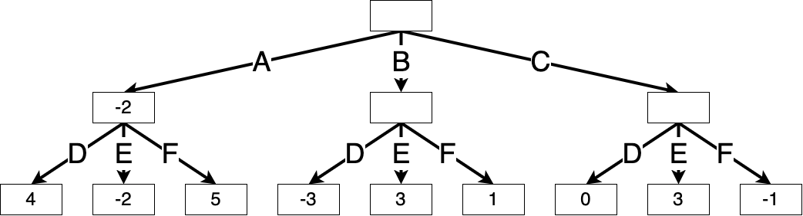
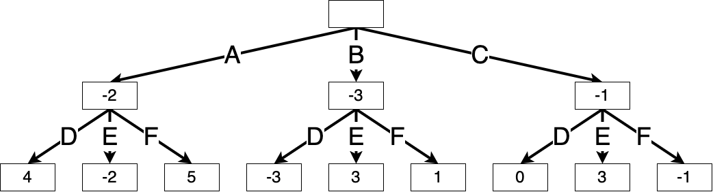
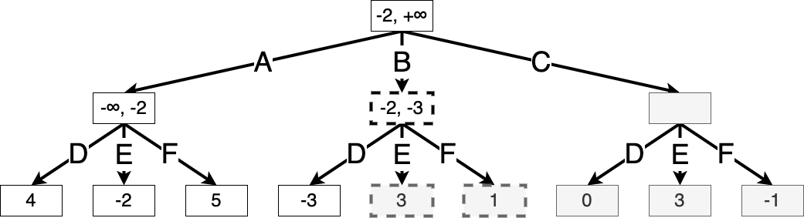
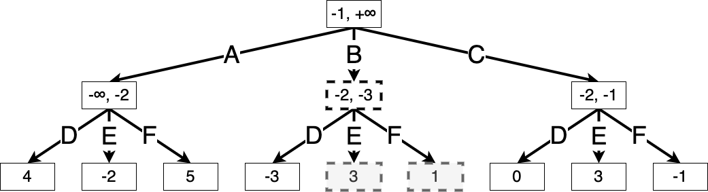

Code
%load_ext autoreload
%autoreload 2Have you ever lost a strategy game against a skilled opponent? It probably seemed like they were ahead of you at every turn. They might have been planning ahead and anticipating your actions, then formulating their strategy to counter yours. If this opponent was a computer, they might have been using one of the strategies that we are about to explore.
%load_ext autoreload
%autoreload 2from utils import Int, Array, latex, jnp, NamedTuple
from enum import IntEnumIn this chapter, we will focus on games that are:
We can represent such a game as a complete game tree that describes every possible match. Each possible state is a node in the tree, and since we only consider deterministic games, we can represent actions as edges leading from the current state to the next. Each path through the tree, from root to leaf, represents a single game.
(In games where one can return to a previous board state, to avoid introducing cycles, we might modify the state by also including the number of moves that have been made. This ensures that the complete game tree indeed has no cycles.)
If you could store the complete game tree on a computer, you would be able to win every potentially winnable game by searching all paths from your current state and taking a winning move. We will see an explicit algorithm for this in Section 9.3. However, as games become more complex, it becomes computationally impossible to search every possible path.
For instance, a chess player has roughly 30 actions to choose from at each turn, and each game takes roughly 40 moves per player, so trying to solve chess exactly using minimax would take somewhere on the order of \(30^{80} \approx 10^{118}\) operations. That’s 10 billion billion billion billion billion billion billion billion billion billion billion billion billion operations. As of the time of writing, the fastest processor can achieve almost 10 GHz (10 billion operations per second), so to fully solve chess using minimax is many, many orders of magnitude out of reach.
It is thus intractable, in any realistic setting, to solve the complete game tree exactly. Luckily, only a small fraction of those games ever occur in reality. Later in this chapter, we will explore ways to prune away parts of the tree that we know we can safely ignore. We can also approximate the value of a state without fully evaluating it. Using these approximations, we can no longer guarantee winning the game, but we can come up with strategies that will do well against most opponents.
Let us now describe these games formally. We’ll call the first player Max and the second player Min. Max seeks to maximize the final game score, while Min seeks to minimize the final game score.
Xs while Min can only play Os.)We also call the sequence of states and actions a trajectory.
Exercise 9.1 (Variable length games) Above, we suppose that the game ends after \(H\) total moves. But most real games have a variable length. How would you describe this?
Example 9.1 (Tic-tac-toe) Let us frame tic-tac-toe in this setting.
Our notation may remind you of Chapter 2. Given that these games also involve a sequence of states and actions, can we formulate them as finite-horizon MDPs? The two settings are not exactly analogous, since in MDPs we only consider a single policy, while these games involve two distinct players with opposite objectives. Since we want to analyze the behaviour of both players at the same time, describing such a game as an MDP is more trouble than it’s worth.
class Player(IntEnum):
EMPTY = 0
X = 1
O = 2
if False:
class TicTacToeEnv(gym.Env):
metadata = {"render.modes": ["human"]}
def __init__(self):
super().__init__()
self.action_space = spaces.Discrete(9)
self.observation_space = spaces.Box(
low=0, high=2, shape=(3, 3), dtype=jnp.int32
)
self.board = None
self.current_player = None
self.done = None
def reset(self, seed=None, options=None):
super().reset(seed=seed)
self.board = jnp.zeros((3, 3), dtype=jnp.int32)
self.current_player = Player.X
self.done = False
return self.board, {}
def step(self, action: jnp.int32) -> Int[Array, "3 3"]:
"""Take the action a in state s."""
if self.done:
raise ValueError("The game is already over. Call `env.reset()` to reset the environment.")
row, col = divmod(action, 3)
if self.board[row, col] != Player.EMPTY:
return self.board, -10
return s.at[row, col].set(player)
@staticmethod
def is_terminal(s: Int[Array, "3 3"]):
"""Check if the game is over."""
return is_winner(s, Player.X) or is_winner(s, Player.O) or jnp.all(s == Player.EMPTY)
@staticmethod
def is_winner(board: Int[Array, "3 3"], player: Player):
"""Check if the given player has won."""
return any(
jnp.all(board[i, :] == player) or
jnp.all(board[:, i] == player)
for i in range(3)
) or jnp.all(jnp.diag(board) == player) or jnp.all(jnp.diag(jnp.fliplr(board)) == player)
@staticmethod
def show(s: Int[Array, "3 3"]):
"""Print the board."""
for row in range(3):
print(" | ".join(" XO"[s[row, col]] for col in range(3)))
if row < 2:
print("-" * 5)In the introduction, we claimed that we could win any potentially winnable game by looking ahead and predicting the opponent’s actions. This would mean that each nonterminal state already has some predetermined game score. That is, in each state, it is already possible to determine which player is going to win.
Let \(V_h^\star(s)\) denote the game score under optimal play from both players starting in state \(s\) at time \(h\).
Definition 9.1 (Min-max search algorithm) The best move for Max is the one that leads to the maximum value. Correspondingly, the best move for Min is the one that leads to the minimum value. This naturally gives rise to a recursive definition of the value of each state under optimal play:
\[ V_h^{\star}(s) = \begin{cases} r(s) & h= H\\ \max_{a \in \mathcal{A}_h(s)} V_{h+1}^{\star}(P(s, a)) & h\text{ is even and } h< H \\ \min_{a \in \mathcal{A}_h(s)} V_{h+1}^{\star}(P(s, a)) & h\text{ is odd and } h< H \end{cases}. \]
Recall that \(P(s, a)\) denotes the next state after taking action \(a\) in state \(s\).
We can compute this by dynamic programming. We start at the terminal states, where the game’s outcome is known, and work backwards. This might remind you of policy evaluation in finite-horizon MDPs (Section 2.3.1).
This translates directly into a recursive depth-first search algorithm for searching the complete game tree.
def minimax_search(s, player) -> tuple["Action", "Value"]:
# Return the value of the state (for Max) and the best action for Max to take.
if env.is_terminal(s):
return None, env.winner(s)
if player is max:
a_max, v_max = None, None
for a in env.action_space(s):
_, v = minimax_search(env.step(s, a), min)
if v > v_max:
a_max, v_max = a, v
return a_max, v_max
else:
a_min, v_min = None, None
for a in env.action_space(s):
_, v = minimax_search(env.step(s, a), max)
if v < v_min:
a_min, v_min = a, v
return a_min, v_min
latex(minimax_search, id_to_latex={"env.step": "P", "env.action_space": r"\mathcal{A}"})$
Example 9.2 (Min-max search for a simple game) Consider a simple game with just two steps: Max chooses one of three possible actions (A, B, C), and then Min chooses one of three possible actions (D, E, F). The combination leads to a certain integer outcome, shown in the table below:
| D | E | F | |
|---|---|---|---|
| A | 4 | -2 | 5 |
| B | -3 | 3 | 1 |
| C | 0 | 3 | -1 |
We can visualize this as the following complete game tree, where each box contains the value \(V_h^\star(s)\) of that node. The min-max values of the terminal states are already known:

We begin min-max search at the root, exploring each of Max’s actions. Suppose Max chooses action A. Then Min will choose action E to minimize the game score, making the value of this game node \(\min(4, -2, 5) = -2\).

Similarly, if Max chooses action B, then Min will choose action D, and if Max chooses action C, then Min will choose action F. We can fill in the values of these nodes accordingly:

Thus, Max’s best move is to take action C, resulting in a game score of \(\max(-2, -3, -1) = -1\).

At each of the \(H\) timesteps, this algorithm iterates through the entire action space at that state, and therefore has a time complexity of \(H^{n_A}\) (where \(n_A\) is the largest number of actions possibly available at once). This makes the min-max algorithm impractical for even moderately sized games.
But do we need to compute the exact value of every possible state? Instead, is there some way we could “ignore” certain actions and their subtrees if we already know of better options? The alpha-beta search makes use of this intuition.
For a given deterministic, zero-sum, fully observable two-player game (Section 9.2), we have seen that it is possible to “solve” the game, that is, determine the best move in every situation, using min-max search (Section 9.3). However, the time complexity of min-max search makes it infeasible for most scenarios. Alpha-beta pruning improves min-max search by pruning down the search tree.
Suppose Max is in state \(s\) is deciding between action \(a\) and \(a'\). If at any point Max finds out that action \(a'\) is no better than action \(a\), she doesn’t need to evaluate action \(a'\) any further.
Concretely, we run min-max search as above, except now we keep track of two additional parameters \(\alpha(s)\) and \(\beta(s)\) while evaluating each state:
Suppose we are evaluating \(V^\star_h(s)\), where it is Max’s turn (\(h\) is even). We update \(\alpha(s)\) to be the highest minimax value achievable from \(s\) so far. That is, the value of \(s\) is at least \(\alpha(s)\). Suppose Max chooses action \(a\), which leads to state \(s'\), in which it is Min’s turn. If any of Min’s actions in \(s'\) achieve a value \(V^\star_{h+1}(s') \le \alpha(s)\), we know that Max would not choose action \(a\), since they know that it is worse than whichever action gave the value \(\alpha(s)\). Similarly, to evaluate a state on Min’s turn, we update \(\beta(s)\) to be the lowest value achievable from \(s\) so far. That is, the value of \(s\) is at most \(\beta(s)\). Suppose Min chooses action \(a\), which leads to state \(s'\) for Max. If Max has any actions that do better than \(\beta(s)\), they would take it, making action \(a\) a suboptimal choice for Min.
Example 9.3 (Alpha-beta search for a simple game) Let us use the same simple game from ex. 9.2. We list the values of \(\alpha(s), \beta(s)\) in each node throughout the algorithm. These values are initialized to \(-\infty, +\infty\) respectively. We shade any squares that have not been visited by the algorithm, and we assume that actions are evaluated from left to right.

Suppose Max takes action A. Let \(s'\) be the resulting game state. The values of \(\alpha(s')\) and \(\beta(s')\) are initialized at the same values as the root state, since we want to prune a subtree if there exists a better action at any step higher in the tree.

Then we iterate through Min’s possible actions, updating the value of \(\beta(s')\) as we go.


Once the value of state \(s'\) is fully evaluated, we know that Max can achieve a value of at least \(-2\) starting from the root, and so we update \(\alpha(s)\), where \(s\) is the root state:

Then Max imagines taking action B. Again, let \(s'\) denote the resulting game state. We initialize \(\alpha(s')\) and \(\beta(s')\) from the root:

Now suppose Min takes action D, resulting in a value of \(-3\). We see that \(V^\star_h(s') = \min(-3, x, y)\), where \(x\) and \(y\) are the values of the remaining two actions. But since \(\min(-3, x, y) \le -3\), we know that the value of \(s'\) is at most \(-3\). But Max can achieve a better value of \(\alpha(s') = -2\) by taking action A, and so Max will never take action B, and we can prune the search here. We will use dotted lines to indicate states that have been ruled out from the search:

Finally, suppose Max takes action C. For Min’s actions D and E, there is still a chance that action C might outperform action A, so we continue expanding:


Finally, we see that Min taking action F achieves the minimum value at this state. This shows that optimal play is for Max to take action C, and Min to take action F.

def alpha_beta_search(s, player, alpha, beta) -> tuple["Action", "Value"]:
# Return the value of the state (for Max) and the best action for Max to take.
if env.is_terminal(s):
return None, env.winner(s)
if player is max:
a_max, v_max = None, None
for a in actions:
_, v = minimax_search(env.step(s, a), min, alpha, beta)
if v > v_max:
a_max, v_max = a, v
alpha = max(alpha, v)
if v_max >= beta:
# we know Min will not choose the action that leads to this state
return a_max, v_max
return a_max, v_max
else:
a_min, v_min = None, None
for a in actions:
_, v = minimax_search(env.step(s, a), max)
if v < v_min:
a_min, v_min = a, v
beta = min(beta, v)
if v_min <= alpha:
# we know Max will not choose the action that leads to this state
return a_min, v_min
return a_min, v_min
latex(alpha_beta_search)$
How do we choose what order to explore the branches? As you can tell, this significantly affects the efficiency of the pruning algorithm. If Max explores the possible actions in order from worst to best, they will not be able to prune any branches at all! Additionally, to verify that an action is suboptimal, we must run the search recursively from that action, which ultimately requires traversing the tree all the way to a leaf node. The longer the game might possibly last, the more computation we have to run.
In practice, we can often use background information about the game to develop a heuristic for evaluating possible actions. If a technique is based on background information or intuition, especially if it isn’t rigorously justified, we call it a heuristic.
Can we develop heuristic methods for tree exploration that works for all sorts of games?
The task of evaluating actions in a complex environment might seem familiar. We’ve encountered this problem before in both multi-armed bandits (Chapter 4) and Markov decision processes (Chapter 2). Now we’ll see how to combine concepts from these to form a more general and efficient tree search heuristic called Monte Carlo Tree Search (MCTS).
When a problem is intractable to solve exactly, we often turn to approximate algorithms that sacrifice some accuracy in exchange for computational efficiency. MCTS also improves on alpha-beta search in this sense. As the name suggests, MCTS uses Monte Carlo simulation, that is, collecting random samples and computing the sample statistics, in order to approximate the value of each action.
As before, we imagine a game tree in which each path represents an entire game. MCTS assigns values to only the game states that are relevant to the current game. That is, we maintain a search tree that we gradually expand at each move. For comparison, in alpha-beta search, the entire tree only needs to be solved once, and from then on, choosing an action is as simple as taking a maximum over the previously computed values.
The crux of MCTS is approximating the win probability of a state by a sample probability. In practice, MCTS is used for games with binary outcomes where \(r(s) \in \{ +1, -1 \}\), and so this is equivalent to approximating the final game score. To approximate the win probability from state \(s\), MCTS samples random games starting in \(s\) and computes the sample proportion of those that the player wins.
Note that, for a given state \(s\), choosing the best action \(a\) can be framed as a multi-armed bandit problem, where each action corresponds to an arm, and the reward distribution of arm \(k\) is the distribution of the game score over random games after choosing that arm. The most commonly used bandit algorithm in practice for MCTS is the upper confidence bound algorithm (Section 4.7).
Remark 9.1 (Summary of UCB). Let us quickly review the UCB algorithm for a multi-armed bandit problem (Section 4.7) For each arm \(k\), we track the sample mean \[ \hat \mu^k_t = \frac{1}{N_t^k} \sum_{\tau=0}^{t-1} \mathbf{1}\left\{a_\tau = k\right\} r_\tau \] of all rewards from that arm up to time \(t\). Then we construct a confidence interval \[ C_t^k = [\hat \mu^k_t - B_t^k, \hat \mu^k_t + B_t^k], \] where \(B_t^k = \sqrt{\frac{\ln(2 t / \delta)}{2 N_t^k}}\) is given by Hoeffding’s inequality, so that with probability \(\delta\) (some fixed parameter we choose), the true mean \(\mu^k\) lies within \(C_t^k\). Note that \(B_t^k\) scales like \(\sqrt{1/N^k_t}\), i.e. the more we have visited that arm, the more confident we get about it, and the narrower the confidence interval.
To select an arm, we pick the arm with the highest upper confidence bound.
This means that, for each edge in the game tree, which corresponds to a state-action pair \((s, a)\), we keep track of the statistics required to compute its UCB:
What does \(t\) refer to in the above expressions? Recall \(t\) refers to the number of time steps elapsed in the bandit environment. As mentioned above, each state \(s\) corresponds to its own bandit environment, and so \(t\) refers to \(N^s\), that is, how many actions have been taken from state \(s\). This term, \(N^s\), gets incremented as the algorithm runs; for simplicity, we won’t introduce another index to track how it changes.
Definition 9.2 (Monte Carlo tree search algorithm) Here we describe how to perform a Monte Carlo tree search for choosing a single action in state \(s_{\text{start}}\).
Inputs:
To choose a single move starting at state \(s_{\text{start}}\), MCTS first tries to estimate the UCB values for each of the possible actions \(\mathcal{A}(s_\text{start})\), and then chooses the best one. To estimate the UCB values, it repeats the following four steps \(T\) times:
After \(T\) repeats of the above, we return the action with the highest UCB value eq. 9.1. Then play continues.
Between turns, we can keep the subtree whose statistics we have visited so far. However, the rest of the tree for the actions we did not end up taking gets discarded.
The application which brought the MCTS algorithm to fame was DeepMind’s AlphaGo Silver et al. (2016). Since then, it has been used in numerous applications ranging from games to automated theorem proving.
How accurate is this Monte Carlo estimation? It depends heavily on the rollout policy \(\pi_\text{rollout}\). If the distribution \(\pi_\text{rollout}\) induces over games is very different from the distribution seen during real gameplay, we might end up with a poor value approximation.
To remedy this, we might make use of a value function \(v : \mathcal{S} \to \mathbb{R}\) that more efficiently approximates the value of a state. Then, we can replace the simulation step of def. 9.2 with evaluating \(r = v(s-\text{next})\), where \(s_\text{next} = P(s_\text{new}, a_\text{new})\).
We might also make use of a “guiding” policy \(\pi_\text{guide} : \mathcal{S} \to \triangle(\mathcal{A})\) that provides “intuition” as to which actions are more valuable in a given state. We can scale the exploration term of eq. 9.1 according to the policy’s outputs.
Putting these together, we can describe an updated version of MCTS that makes use of these value functions and policy:
Definition 9.3 (Monte Carlo tree search with policy and value functions) Inputs: - \(T\), the number of iterations per move - \(v\), a value function that evaluates how good a state is - \(\pi_\text{guide}\), a guiding policy that encourages certain actions - \(c\), a positive value that encourages exploration
To select a move in state \(s_\text{start}\), we repeat the following four steps \(T\) times:
We finally return the action with the highest UCB value eq. 9.2. Then play continues. As before, we can reuse the tree across timesteps.
class EdgeStatistics(NamedTuple):
wins: int = 0
visits: int = 0
class MCTSTree:
"""A representation of the search tree.
Maps each state-action pair to its number of wins and the number of visits.
"""
edges: dict[tuple["State", "Action"], EdgeStatistics]
def mcts_iter(tree, s_init):
s = s_init
# while all((s, a) in tree for a in env.action_state(s)):How do we actually compute a useful \(\pi_\text{guide}\) and \(v\)? If we have some existing dataset of trajectories, we could use Chapter 8 (that is, imitation learning) to generate a policy \(\pi_\text{guide}\) via behaviour cloning and learn \(v\) by regressing the game outcomes onto states. Then, plugging these into def. 9.3 results in a stronger policy by using tree search to “think ahead”.
But we don’t have to stop at just one improvement step; we could iterate this process via self-play.
Recall the policy iteration algorithm for solving an MDP (Section 2.4.4.2). Policy iteration alternates between policy evaluation (taking \(\pi\) and computing \(V^\pi\)) and policy improvement (setting \(\pi\) to be greedy with respect to \(V^\pi\)). We can think of MCTS as a “policy improvement” operation: for a given policy \(\pi^0\), we can use it to guide MCTS. This results in an algorithm that is itself a policy that maps from states to actions. This improved policy (using MCTS) is usually called the search policy. Denote it by \(\pi^0_\text{MCTS}\). Now, we can use imitation learning techniques (Chapter 8) to obtain a new policy \(\pi^1\) that imitates \(\pi^0_\text{MCTS}\). We can now use \(\pi^1\) to guide MCTS, and repeat.
Definition 9.4 (MCTS with self-play) Input:
For \(t = 0, \dots, T-1\):
Note that in implementation, the policy and value are typically both returned by a single deep neural network, that is, with a single set of parameters, and the two loss functions are added together.
This algorithm was brought to fame by AlphaGo Zero (Silver et al., 2017).
In the search algorithm above, we used \(W^{s, a}\) to track the number of times the policy wins after taking action \(a\) in state \(s\). This binary outcome can easily be generalized to a continuous reward at each state-action pair. This is the reward function we assumed when discussing MDPs (Chapter 2).
In this chapter, we explored tree search-based algorithms for deterministic, zero sum, fully observable two-player games. We began with min-max search (Section 9.3), an algorithm for exactly solving the game value of every possible state. However, this is impossible to execute in practice, and so we must resort to various ways to reduce the number of states and actions that we must explore. Alpha-beta search (Section 9.4) does this by pruning away states that we already know to be suboptimal, and MCTS (Section 9.5) approximates the value of states instead of evaluating them exactly.
Russell & Norvig (2021, ch. 5) provides an excellent overview of search methods in games. The original AlphaGo paper Silver et al. (2016) was a groundbreaking application of these technologies. Silver et al. (2017) removed the imitation learning phase, learning the optimal policy from scratch using self-play. AlphaZero (Silver et al., 2018) then extended to other games beyond Go, namely shogi and chess, also learning from scratch. In MuZero (Schrittwieser et al., 2020), this was further extended by learning a model of the game dynamics. EfficientZero (Ye et al., 2021) presented a more sample-efficient algorithm based on MuZero. Gumbel MuZero (Danihelka et al., 2021) greatly improved the computational efficiency of MuZero by reducing the number of rollouts required. Stochastic MuZero (Antonoglou et al., 2021) extends MuZero to stochastic environments.
While search methods are extremely powerful, they are also computationally intensive, and have therefore historically been written in lower-level languages such as C or C++ rather than Python. The development of the JAX framework addresses this issue by providing a readable high-level Python library that compiles to code optimized for specific hardware. In particular, the Mctx library (Babuschkin et al., 2020) provides usable implementations of MuZero and its variants above.